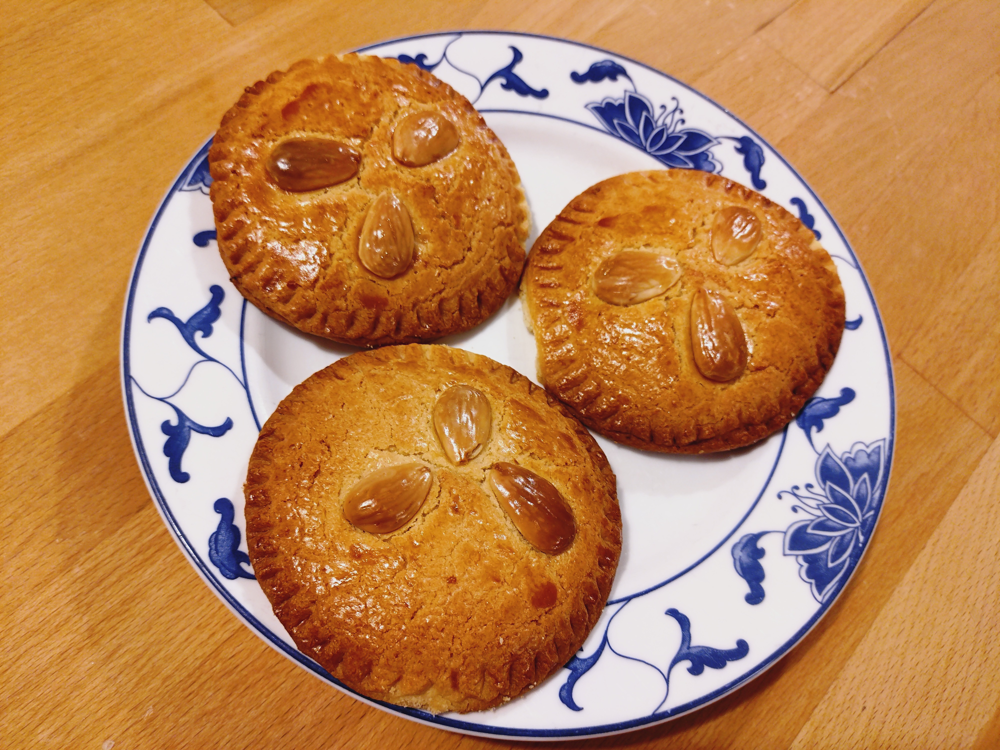

Der »Gefüllter Kuchen«, auch bekannt als Gevuld Heertje (gefüllter Herr) oder Gevulde Herenkoek (gefüllter Herrenkuchen) ist ein weit verbreitetes niederländische Küchlein oder Plätzchen, das meistens mit Mandelpaste gefüllt ist. Dieses Rezept basiert auf zwei niederländischen Quellen, auf die ich unten verweise. Ich habe danach recherchiert, ob die Mandeln vor der Verarbeitung geröstet werden sollten, habe dazu allerdings keinerlei Informationen gefunden. Vermutlich sind ungeröstete Mandeln von Vorteil, da die Röstung zur Freisetzung des nusseigenen Öls führt, was bei Mandelpaste ausdrücklich nicht gewünscht ist.

Zutaten (Menge ×1)
Gib die gewünschte Menge an:
Mandelpaste
blanchierte und geschälte Mandeln
Zucker
Zitrone, nur die Schale
Ei M
Teig
Mehl Type 405
Backpulver
Feiner Backzucker
ungesalzene Butter auf Zimmertemperatur
Salz
Milch
Eigelb M
Zitrone, nur die Schale
Füllung
Mandelpaste
Eigelb M
Wasser
Eistreiche und Garnierung
Ei
Wasser
blanchierte und geschälte Mandeln
Utensilien
Standmixer
Rührgerät
Nudelholz
Runder Ausstecher, ca. 8 cm
Ofeneinstellung
⏲ 210°C Umluft, 15 Minuten
Vorbereitung
2 Tage vorher: Mandelpaste
Die Mandelpaste am besten 2 Tage bis zu einer Woche vorher zubereiten, damit sie ausreichend Zeit hat, Aromen zu entwickeln.
Mandeln, Zucker und Zitronenschale im Standmixer zu einem gleichmäßigen Mandelmehl mixen. Dabei darauf achten, rechtzeitig aufzuhören, bevor das Mandelöl sich trennt.
EIn eine Schüssel geben und ein Ei einkneten, bis eine einheitliche Masse entstanden ist. Diese sollte sich zu einer klebrigen Kugel formen lassen.
Die Mandelpaste als Kugel in Frischhaltefolie einwickeln und im Kühlschrank 2 Tage oder bis zu einer Woche ruhen lassen.
1 Teig vorher: Teig
Auch der Teig kann für die Entfaltung der Aromen mindestens eine Stunde (besser einen Tag) vorher zubereitet werden.
Zitronenschale, Butter, Zucker und Salz mit dem Rührgerät flockig verrühren.
Ei und Milch hinzugeben und gründlich weiterrühren, sodass eine helle Creme entsteht.
Mehl und Backpulver separat vermischen und gemeinsam zur Buttercreme geben.
Mit der Hand nur so lang verkneten, bis ein gleichmäßiger Teig entsteht, der nicht mehr an den Händen klebt. Falls der Teig sehr klebrig erscheint, können 25 g Mehl hinzugefügt werden.
Den Teigling zu einer Kugel formen und im Kühlschrank 1 Stunde bis zu einem Tag ruhen lassen.
Backtag
Am Backtag daran denken, die Mandelpaste und den Teig eine Stunde vorher zur Klimatisierung aus dem Kühlschrank zu holen!
Füllung
Mandelpaste und Eigelb mit der Hand oder einem Löffel zu einer konsistenten Masse verkneten.
Wasser hinzugeben und dieses ebenfalls gleichmäßig einkneten.
Küchlein formen
Backblech mit Backpapier bereitlegen.
Den Teig in zwei gleiche Hälften teilen.
Die erste Hälfte 3 mm dünn ausrollen und mit dem Ausstecher Kreise ausstechen und diese mit 2 cm Abstand zueinander auf dem Backblech platzieren.
Tipp: Benutzt man als Unterlage Backpapier, kann man auf eine Bemehlung der Arbeitsfläche verzichten (weniger trockene Küchlein), und kann die Kreisformen zudem ohne Verzerrungen auf das Backblech übertragen, indem man sie einfach kopfüber vom Backpapier löst und direkt auf das Blech fallen lässt.
Die Mandelpaste gleichmäßig als kleine Häufchen auf den Teigkreisen verteilen und dabei 1.25 cm zum Rand lassen.
Aus der anderen Teighälfte dieselbe Anzahl Kreise ausstechen und als Deckel mittig auf die Mandelpaste legen.
Mit der Handfläche leicht auf die Deckel drücken, damit eine flache Kuppel entsteht.
Mit der flachen Gabel die Ränder rundherum eindrücken und die Küchlein damit versiegeln.
Eistreiche und Dekoration
Für die Eistreiche das Ei und Wasser gleichmäßig verrühren.
Jedes Küchlein komplett bestreichen.
Anschließend auf jedem Küchlein drei Mandeln andrücken.
Auch die Mandeln mit der Eistreiche überziehen.
15 Minuten antrocknen lassen und dabei den Herd schonmal auf 210°C Umluft vorheizen.
Backen
Die Küchlein ca. 15 Minuten backen bis sie goldgelb sind.
Für ein gleichmäßiges Ergebnis am besten nach der Hälfte der Zeit einmal das Backblech drehen.